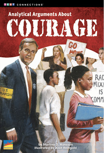
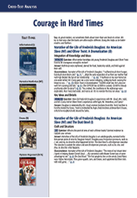
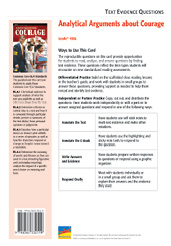

Related Resources
Text-Dependent Comprehension
- Analytical Arguments About Courage Text Evidence Question Card
- Courage in Hard Times Cross-Text Analysis Card
Other Titles in This Topic Set
- The Dust Bowl (Informational)
- Narrative of the Life of Frederick Douglass: An American Slave (Narrative Nonfiction)
- Oliver Twist: A Dramatization (Narrative Fiction)
Online Resources
- Teacher’s Guide
- E-Reader
- E-Presenter
- Comprehension Project Organizers
Lexile® 930L
Analytical Arguments About Courage
ELA Strategies and Skills
Text-Dependent Comprehension Strategies
- Summarize story elements.
- Visualize events.
- Determine key details.
- Analyze character.
- Analyze arguments.
- Draw inferences.
- Determine and analyze theme.
Extend Language Knowledge
- Choose correct punctuation.
Vocabulary Strategies
- Interpret figurative language.
- Practice academic vocabulary.
Vocabulary List
- braying*
- composure*
- devouring*
- formidable*
- hypothetical**
- indebted*
- intelligible*
- pandemonium*
- perpetrators*
- procession*
- quirky*
- shackle*
- squelched*
- taunts*
- testament*
- threshold*
*General academic word
**Domain-specific word
Writing
- Analytic writing to sources:
Analytical Arguments
- Research and Writing
|
What Makes This Text Complex?
|
|
Purpose and Levels of Meaning
3
|
Themes are multidimensional and require readers to make inferences about characters and plot events. (pp. 6–8)★
|
|
Structure
2
|
The book contains various text types: historical fiction and analytical argument essays. (pp. 2–5, 9)★
|
|
Language Conventionality and Clarity
2
|
The text includes many compound sentences, rich descriptive language, and a range of literary techniques. (p. 10)★
|
|
Knowledge Demands
2
|
Some readers may not have familiarity with certain historical settings.
|
Qualitative text complexity dimensions from the CCSS are scored on the following scale: 1–Low; 2–Middle Low; 3–Middle High; 4–High.
★Citations refer to pages within this teacher’s guide that address the specific text complexity.
LEXILE® is a trademark of MetaMetrics, Inc., and is registered in the United States and abroad.
Common Core Standards © Copyright 2010. National Governors Association Center for Best Practices and Council of Chief State School Officers. All rights reserved.
© Benchmark Education Company, LLC. All rights reserved. Teachers may photocopy the reproducible pages for classroom use. No other part of the guide may be reproduced or transmitted in whole or in part in any form or by any means, electronic or mechanical, including photocopy, recording, or any information storage or retrieval system, without permission in writing from the publisher.
Analytical Argument:
Literature
Topic Set: Courage in Hard Times
Scaffolded Preview for
ELs and Struggling Readers
Support students to access the text by orally introducing academic vocabulary, language structures, and concepts.
Page 2. Throughout the book, there may be words or phrases that are unfamiliar. These words are written in blue. What is an ethical dilemma? What is the root word of ethical? If you can’t figure out the definition of the blue words and phrases, they are defined at the bottom of the page.
Pages 4–9. Look at the pictures throughout the story “Into the Fire.” What do the girls’ clothing reveal about the period in which this story is set? What do the pictures and title tell you about the main conflict in this story?
First Read
Read Part 1 (pp. 2–9) RL.6.1, RL.6.3, W.6.5, W.6.8, SL.6.1a, SL.6.1b, SL.6.1c, SL.6.1d
Preview and Make Predictions
Invite students to flip through the book and view the illustrations, or display the e-book and preview the pages together.
Read aloud the features of an analytical argument on the inside front cover. Then have students turn to the Table of Contents and read the titles of each section. Invite students to read the book description on the back cover.
Say: Two of the stories in this book are historical fiction. Although the main characters are not real people, the events in these stories are based on true events. The third story is an example of realistic fiction. It is set in the present-day. The characters are made-up, but the situation is something that could happen. After the three stories, there are three argument essays about courage.
If your students need more support, use the Scaffolded Preview provided.
Set a Purpose
Say: Because these stories deal with characters who make difficult decisions that affect themselves and others, let’s pay close attention to how their actions contribute to the sequence of events. As you read “Into the Fire,” use self-stick notes to identify the main characters and setting, and to flag main ideas.
Choose the reading option that best meets your students’ needs.
Summarize Main Idea and Key Details: Think and Write Together
Invite students to state the characters, settings, and main events in “Into the Fire.” As a group, create a Story Elements Chart. Then, as a group, construct a summary of “Into the Fire.” If students need more support to summarize the text, use the lesson on page 3 of this guide.
|
Characters
|
Setting
|
|
Sofia, Madeline, other workers at the
Lowell mill
|
A textile mill in Lowell, Massachusetts
|
|
Main Events
|
|
Sofia and Madeline go to work at the textile mill.
|
|
A fire breaks out and there is pandemonium.
|
|
Madeline is caught in her machine and cannot free herself.
|
|
Sofia hears Madeline’s cries for help and goes back to help her.
|
|
Sofia frees Madeline and the girls escape the fire.
|
Sample Part 1 Story Elements Chart
Lesson: Visualize Key Events
Remind students that visualizing events as they read can help them identify the important information and summarize what happened.
Say: Close your eyes and listen as I read a scene from “Into the Fire.” Picture in your mind what is happening.
Read aloud pages 6 and 7.
Say: What did you see happening in the factory? What did the workers do when Sofia alerted them to the fire? What made Sofia’s actions different from the other girls?
Pair students and have them write a summary of pages 6 and 7.
Summarize Main Idea and Key Details: Think/Pair/Write/Share
Bring students together and ask several pairs of students to read their summaries aloud. As a whole group, evaluate the questions and summaries. Point out that students can use some of this information to help them write their summaries of “Into the Fire.” As a group, evaluate the summaries and identify any omitted key information. Then write a group summary of Part 1.
|
Sofia and Madeline were friends. Both girls worked at a textile factory in Lowell. One day, a fire broke out at the factory. All the girls working in the factory rushed out, but Madeline was stuck in her sewing machine. Sofia heard Madeline’s cries for help and rushed back to help her friend. She was the only girl to do so. She had to think quickly to free Madeline, but the girls managed to escape.
|
Sample Part 1 Summary
Scaffolded Preview for
ELs and Struggling Readers
Support students to access the text by orally introducing academic vocabulary, language structures, and concepts.
Page 10. Look at the title of the story: “Together and Equal.” What words mean the opposite of the title?
Page 13. Look at the picture. What emotions are being shown in this picture? What is happening in this scene?
Page 16. Look at this picture. How is the setting of “Breaking the Silence” different from the settings of “Into the Fire” and “Together and Equal”?
Read Part 2 (pp. 10–20) RL.6.1, RL.6.3, W.6.5, W.6.8, SL.6.1a, SL.6.1b, SL.6.1c, SL.6.1d
Set a Purpose
Say: As you read “Together and Equal,” use self-stick notes to identify the characters and setting and flag key events, including the challenges the main character faces.
Choose the reading option that best meets the needs of your students. If students need more support to access the text, use the Scaffolded Preview provided.
Summarize Main Idea and Key Details: Think/Pair/Write/Share
Invite students to share with a partner what they noted in the text. Have them collaborate to create a new Story Elements Chart for “Together and Equal” that lists the characters, setting, and main events.
|
Characters
|
Setting
|
|
Patricia, Mr. and Mrs. Henderson, protesters
|
A Virginian town in 1959
|
|
Main Events
|
|
Patricia tells her parents she wants to volunteer to be among the first black students to integrate the local school.
|
|
Patricia’s father does not want her to get involved but eventually agrees.
|
|
Patricia and the other volunteers integrate the school.
|
|
Protesters try to keep the students from entering the school.
|
|
Patricia and her friends integrate the school.
|
Sample “Together and Equal” Story Elements Chart
Then have pairs collaborate to write their own summary of the key ideas in “Together and Equal.” If students need more support in deciding what to include in a summary, refer back to the lesson strategy taught in Part 1.
Bring students together and ask several pairs of students to read their summaries aloud. Then, as a whole group, have students use the skills they have learned to write a summary of the story, “Breaking the Silence.”
|
Stephen and his fellow baseball players were going to practice to prepare for the championship game. On the way there, they saw Zachary. Some of the baseball players started making fun of Zachary and then they broke his gold clubs. Although Stephen did not break Zachary’s clubs, he did not stop the other baseball players from doing so either. Stephen felt terrible. He had to decide if he should tell an adult and get his teammates in trouble before the game or stay quiet so that his team could still play the game. He decided to tell the principal. The kids who bullied Zachary got in trouble and were not allowed to play in the championship game.
|
Sample “Breaking the Silence” Group Summary
Read Part 3 (pp. 21–30) RL.6.1, RL.6.3, RI.6.1, RI.6.2, RI.6.8, W.6.2b, W.6.5, W.6.8, SL.6.1a, SL.6.1b, SL.6.1c, SL.6.1d
Set a Purpose
Say: Think about the three stories you read. While their situations were very different, each character had to make a difficult decision in a tough situation.
Now you will read three writers’ arguments on this topic. As you read, use self-stick notes to flag the arguments and the reasons given. In the first argument, details are highlighted for an example.
Choose the reading option that best meets the needs of your students. If students need more support to access the text, use the Scaffolded Preview provided.
Summarize Main Idea and Key Details: Think and Write Independently
Ask students to review the details and reasons they flagged in each argument. Have them independently create a chart that summarizes the opinions and reasons given in each opinion piece.
|
Characters with Courage
|
Foolish Decisions
|
Worth the Risk
|
|
Argument
|
Each main character acted with great courage.
|
Each main character acted foolishly and could have gotten hurt.
|
Each main character puts him or herself in a dangerous situation, but the risk is worth it.
|
|
Reason 1
|
Sofia risked her own life to save Madeline.
|
Sofia could have been killed going back to save Madeline. She should have considered the consequences.
|
Although Sofia’s decision to go back was not smart, it was possible no one else could have saved Madeline.
|
|
Reason 2
|
Patricia faced physical harm to stand up for what she believed in.
|
Patricia puts herself in harm instead of considering less dangerous ways of fighting for integration.
|
Patricia knows her cause is worth any risks she might take.
|
|
Reason 3
|
Stephen risks hurting his team and becoming unpopular to stand up for a bullied classmate.
|
Stephen didn’t consider the impact of his decision on teammates. He should have waited one more day.
|
Although Stephen’s decision impacts the rest of his team, he knows keeping silent would send the wrong message.
|
Sample Three Arguments About Characters’ Actions Summary Chart
Have students fill out the argument-writing rubric on page 30. Explain that the numbers in the rubric stand for 4–exemplary; 3–accomplished; 2–developing; 1–beginning.
Then ask them to answer the question: Did the writers include the important elements?
Scaffolded Preview for
ELs and Struggling Readers
Support students to access the text by orally introducing academic vocabulary, language structures, and concepts.
Pages 22–28. Read the title of each argument. What can you predict from each title?
Pages 22–28. Read the first paragraph of each argument. What does the first paragraph of each argument have in common?
Pages 22–29. Read the last paragraph of each argument. What does the last paragraph of each argument have in common?
Close Reading Options
Support students to dig deeper into the text. Choose one or more of these close reading options, or choose an alternate focus that addresses your students’ needs.
Routine for Finding
Text Evidence
- Read the question carefully.
- Ask yourself: What words in the question help me know what evidence to look for?
- Reread the text to find the
evidence.
- Evaluate the evidence. Ask yourself: Does the evidence I found help me answer the question? Do I need more evidence?
- Use the evidence to answer the question.
- Ask yourself: Does my evidence support my answer?
|
Text Evidence
|
|
“. . . a new worker, a girl named Madeline . . .” (p. 5)
|
|
“Secretly, Madeline was thrilled by this offer, but squelched her enthusiasm for fear of looking like a giddy little girl.” (p. 5)
|
|
“It was rare for an older, more experienced worker . . . to pay any attention to a newly hired, younger worker, and Madeline didn’t want to make a bad impression.” (p. 5)
|
|
“I’m going to write a letter to my Pa. Why don’t you come to my boardinghouse and we can write letters together?” (p. 5)
|
|

|
|
Inference
|
|
The girls are not close friends, but Madeline looks up to Sofia.
|
Sample Make Inferences Graphic Organizer
Close Reading and Analysis
Close Reading Option 1: Draw Inferences
RI.6.1, RI.6.3, W.6.8, SL.6.1a, SL.6.1b, SL.6.1c, SL.6.1d, SL.6.3
Model Finding Text Evidence
Display and read aloud the close reading question.
|
What can you infer about Sofia and Madeline’s relationship before the fire? Cite specific details from the text to support your response.
|
Explain that this question asks readers to refer back to the beginning of “Into the Fire” and is asking them to use the text to make an inference about the relationship between two characters.
Say: I need to find evidence in the text that I can use to make an inference about the relationship between Sofia and Madeline before the fire.
Reread the first paragraph on page 5.
Say: Madeline is a new worker at the textile mill. That means the two girls have not known each other long.
Display a blank Text Evidence Chart and model how you record the text evidence you found.
Support Practice
Ask students to turn to page 5.
Collaborative conversation (turn and talk). Ask students to turn to a partner, reread the next three paragraphs on page 5, and find additional text evidence that helps them make an inference about the girls’ relationship. Remind students to stay on topic, build on each other’s ideas, and ask questions to clarify each other’s thoughts.
Bring students together and ask several pairs to share their inferences about the girls’ relationship and the supporting text evidence. Students should be able to explain that Sofia was nice to Madeline, but the girls did not know each other very well. Add this evidence to your Text Evidence Chart.
Find Text Evidence Independently
Ask students to finish reading page 5 and the first paragraph on page 6. Tell them to use evidence from the text to make an inference about Sofia and Madeline’s relationship. (Sofia is kind and is friendly to the younger Madeline, who is excited to be friends with Sofia. They are becoming friends.) Add this evidence to the chart.
Discuss how this close reading has helped students analyze a character’s actions to make inferences. Collaborate with the students to complete the chart by stating the inferences the evidence support.
Close Reading Option 2: Analyze Theme
RL.6.1, RL.6.3, RL.6.5, W.6.8, SL.6.1a, SL.6.1b, SL.6.1c, SL.6.1d, SL.6.3
Analyze Theme
Display and read aloud the close reading question.
|
What is the significance of the note a girl gives to Patricia during her first week at the integrated school? How does this relate to the overall theme of the story?
|
Explain that this question is asking students to identify the theme of the story.
Say: I will need to identify the theme of the story. To find the theme, I will have to make an inference based on text evidence. This question also asks about the significance of a specific event on the theme.
Direct students to page 15.
Say: In this paragraph, Patricia explains the note she received and what impact it had on her. She says that change can happen if everyone believes it can. This is evidence that the theme of the story is that things can change if you believe and work to change them.
Record the evidence on a blank Text Evidence Chart.
Support Practice
Ask students to turn to pages 11 and 12.
Collaborative conversation (turn and talk). Ask students to turn to a partner. Ask them to reread pages 11 and 12 to find evidence to support the theme of the story. Remind students to stay on topic, build on each other’s ideas, and ask questions to clarify each other’s thoughts.
Bring students together and invite pairs to share the key details they used to support the main claim. Students should be able to point to Patricia wanting things to change, is willing to work for change, and is brave enough to put herself in danger to make change happen.
Find Text Evidence Independently
Ask students to turn to pages 13 and 14. Tell them to find more evidence to support the theme that change can only happen when people are brave enough to work for it. (She is willing to take risks to have things change. Patricia reminds her friend not to show fear, the girls walked without flinching and were determined to enter the school.)
Discuss how this close reading has helped students analyze the theme.
|
Text Evidence
|
|
“It was a small act, but it restored my hope that things will change, soon, for us and for others. We will achieve together and equal as long as we believe we can.” (p. 15)
|
|
“You have to understand that this is important to us. We want things to be different for the people in this town.”(p. 11)
|
|
“I understand what might happen, but it’s a risk I am prepared to take.” (p. 12)
|
|
“‘Do not show fear,’ Patricia reminded Naomi. ‘And stay calm no matter what.’” (p. 14)
|
|
“Without even flinching, the girls dodged the small white missiles
and kept right on walking. Then [they] . . . gave each other a determined look. . . .” (p. 14)
|
|
|
|
Theme
|
|
Change cannot happen without people who believe it can and are willing to work and be brave to bring about change.
|
Sample Theme Graphic Organizer
|
Text Evidence
|
|
“For one thing, Stephen is likely to become very unpopular with his teammates.” (pp. 24–25)
|
|
“He also risks hurting the team’s chances in the playoffs.” (p. 25)
|
|
“Instead of doing what’s best for him, he does the right thing for Zachary.” (p. 25)
|
|
“It would be easy for him to stay quiet and ensure that his friends and teammates avoided punishment.” (p. 19)
|
|
“Stephen took a lot of heat from his teammates for being a ‘traitor,’ . . .” (p. 20)
|
|
|
|
Character
|
|
Stephen’s decision was courageous in light of his circumstances.
|
Sample Analyze Character Graphic Organizer
Close Reading Option 3: Analyze Character
RI.6.1, RI.6.3, W.6.8, SL.6.1a, SL.6.1b, SL.6.1c, SL.6.1d, SL.6.3
Model Finding Text Evidence
Display and read aloud the close reading question.
|
Reread the last two paragraphs of Argument 1. Why does the writer claim that Stephen’s decision was courageous in light of his circumstances?
|
Explain that this question is asking them to read a character analysis and then find evidence to support the analysis.
Say: I need to find evidence that supports the claim that Stephen’s actions were courageous in light of his circumstances. First, I need to think about Stephen’s circumstances.
Reread the last paragraph on page 24.
Say: If Stephen turns in his teammates, he is likely to become very unpopular with them. In addition, he is hurting the team’s chance to win the playoffs. That has to be a difficult decision to make because he risks letting the whole team, including people who have not done anything wrong, down.
Model writing your evidence on a blank Text Evidence Chart.
Support Practice
Ask students to turn to page 25.
Collaborative conversation (turn and talk). Ask students to turn to a partner, reread the last two paragraphs on page 25, and find additional evidence that supports the claim that Stephen’s actions were courageous. Remind students to stay on topic, build on each other’s ideas, and ask questions to clarify each other’s thoughts.
Bring students together and ask several pairs to share the text evidence they found and to explain how their evidence supports their inference. Students should be able to explain that Stephen was thinking of his classmate Zachary more than of himself.
Find Text Evidence Independently
Ask students to reread the story “Breaking the Silence.” Tell them to find additional text evidence in the story that helps support the argument writer’s claim that Stephen was courageous. (Staying quiet would be easier for Stephen; Stephen took a lot of heat from his teammates.)
Discuss how this close reading has helped students use text evidence to make an inference about the speech.
Close Reading Option 4: Analyze an Argument
RL.6.1, RL.6.3, W.6.2b, W.6.8, SL.6.1a, SL.6.1b, SL.6.1c, SL.6.1d, SL.6.3
Model Finding Text Evidence
Ask students to turn to Argument 2, Foolish Decision, on page 26. Explain that a
well-written argument states the argument clearly, supports the argument with reasons, uses transition words to connect ideas, and has a concluding statement which restates the argument.
Say: The first paragraph clearly states the writer’s argument: “Though their actions seem courageous, they risk hurting themselves and others. In each case, the characters could have gotten the same positive results with less risk.” In order to analyze this claim, I will look for reasons and specific text evidence that the author uses to support this argument.
Distribute the graphic organizer BLM on the back cover of this guide and ask students to write the argument at the top of the chart.
Say: Now I need to find a piece of evidence to support this argument. I’ll begin by rereading the second paragraph to look for evidence. The reason why the writer thinks that although Sofia was brave, she risked not only her life but also Madeline’s, by rushing back to save her instead of finding a firefighter.
Support students to find the text evidence provided to support this reason: the writer points out that Sofia loses valuable time trying to free Madeline’s foot from the treadle. Have students reread “Into the Fire” to find additional evidence to support the writer’s claim. Add the evidence to the chart.
Support Practice
Collaborative conversation (turn and talk). Ask students to turn to a partner, reread the third paragraph on page 26, and find the evidence the writer uses to support the claim that Patricia doesn’t care about her safety or her parents’ concerns. Remind students to stay on topic, build on each other’s ideas, and ask questions to clarify each other’s thoughts.
Bring students together and ask several pairs to share their text evidence. Students should refer to the conversation between Patricia and her parents.
Find Text Evidence Independently
Tell students to look for parts of the argument that could be made stronger by providing more text evidence. Ask them to reread all three stories to gather more text evidence and write quotes from the text, indicating where they would insert it in the argument if they were to revise the writing.
Discuss how this close reading has helped students analyze an opinion text.
Close Reading Option 5: Answering Text Evidence Questions RL.6.1, RL.6.2, RL.6.4
Use these questions to extend close reading or challenge students who do not need modeling or differentiated practice.
Draw Inferences
Question: What evidence from the text supports the conclusion that the girls in the Lowell textile mill were working in unsafe conditions?
Text Evidence: “Rows of intricate looms stretched the length of the dimly lit
room. . . .” “… they began their
fourteen-hour workday.” “With all eyes aimed on the lone door …” (p. 6)
Determine Key Details
Question: What details in “Together and Equal” support the idea that integration was necessary to make things equal?
Answer: Mrs. Henderson explains how separate but equal is unfair to the black students.
Text Evidence: “The whole idea of separate but equal is nothing but bunk. Patricia’s school has worn, outdated books, and some of the kids have to sit on the floor because the classrooms are so crowded. Never mind the paint on the walls that’s as old as the hills. And she’s forced to ride the bus clear across town every day to go to the black school when she could walk right down the street to the white school instead.” (p. 11)
Use Context Clues
Question: What examples does the author of “Breaking the Silence” give to help define the word quirky?
Definition: odd or peculiar
Text Evidence: “He was incredibly smart and apparently a golf whiz, but he had a hard time making friends because of his quirky habits and rules.” (p. 17).
Extend Meaning

Cross-Text Analysis Card
Build Language, Vocabulary, and Comprehension
L.6.2a, L.6.5a
Choosing the Correct Punctuation
Remind students that dashes are used to set parenthetical phrases in sentences apart from the rest of the sentence. They are not the same as commas and should not be treated as such.
Display the following sentence.
My foot—it’s stuck.
Explain that the dash sets the second part of the sentence apart from the first part.
Display another sentence lacking in parenthetical punctuation.
Oh, all right you do what you have to do.
Say: Where do you think a dash needs to be placed?
Write the sentence with the correct placement of the parenthetical punctuation.
Oh, all right—you do what you have to do.
Continue this lesson by having students work in pairs to identify other instances in which dashes are used in this book. Have them circle the parenthetical phrases.
Interpret Figurative Language
Have students turn to the vocabulary activity on the inside back cover.
Say: Similes and metaphors are types of figurative language. They both compare things, but similes use the words like or as and metaphors do not. Let’s find examples of similes and metaphors in this book.
Have students turn to page 17.
Say: The writer compares the way students leave the school building to a herd of wild horses racing across the Russian Steppes. The writer uses the word as so this is a simile. It means the students were chaotic and full of energy.
Model how to complete the chart. Then ask students to complete the rest of the chart independently, and to provide their answers in writing.
Comprehension Across Texts
If students have read all four texts in the topic set, use the questions on the Cross-Text Analysis Card for additional close readings that require students to find and analyze evidence in more than one text.
Reading, Writing, Speaking and Listening RL.6.1, W.6.1a, W.6.1b, W.6.1c, W.6.1d, W.6.1e, W.6.2a, W.6.2b, W.6.2c, W.6.2d, W.6.2e, W.6.2f, SL.6.2, SL.6.4, L.6.6
Practice Finding Text Evidence
Have students reread the text to find evidence to answer the questions on the Text Evidence Question Card.
Write to Sources: Analytical Argument
Have students demonstrate their understanding of Analytical Arguments About Courage by responding to the text-dependent writing prompt on the inside back cover. Rubrics to help you evaluate students’ writing are available in the online teacher’s guide.
Analytical Argument. Sofia, Patricia, and Stephen all made important decisions. Write an argument essay to answer this question: which of the three main characters had the strongest motivation for his or her actions? Defend your claim with reason and evidence from the stories.
Practice Academic Vocabulary
Ask partners to each choose four words from the glossary and write short sentences to indicate they understand the definition of the words. Partners should then compose a short paragraph that includes the four words they chose. Have pairs read aloud their paragraphs.
Collaborative Research
Have partners conduct collaborative research on people in history who have made courageous decisions, such as Ruby Bridges or Miep Gies. Have them use print and digital resources. They should take notes on what made the person courageous and then write and publish their report. Remind them to sort evidence and list sources where necessary. As an additional challenge, have them present their reports to the class.
Independent Learning

Text Evidence Question Card
Interactive Activities
Visit benchmarkuniverse.com for additional interactive learning activities.
Analyze an Argument
Directions: Read Argument 2, “Foolish Decision.” Write the author’s argument, reasons, and supporting text evidence in the chart.
Beginning
Middle
End